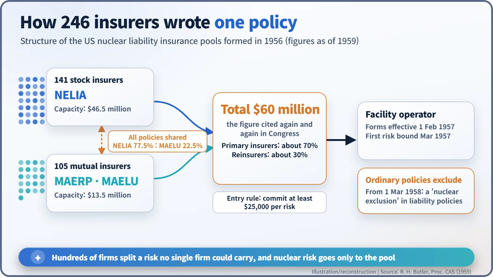
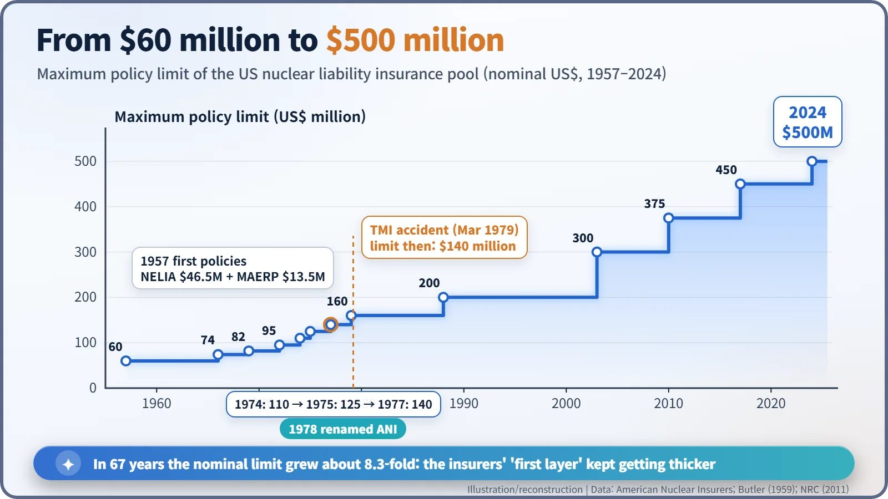
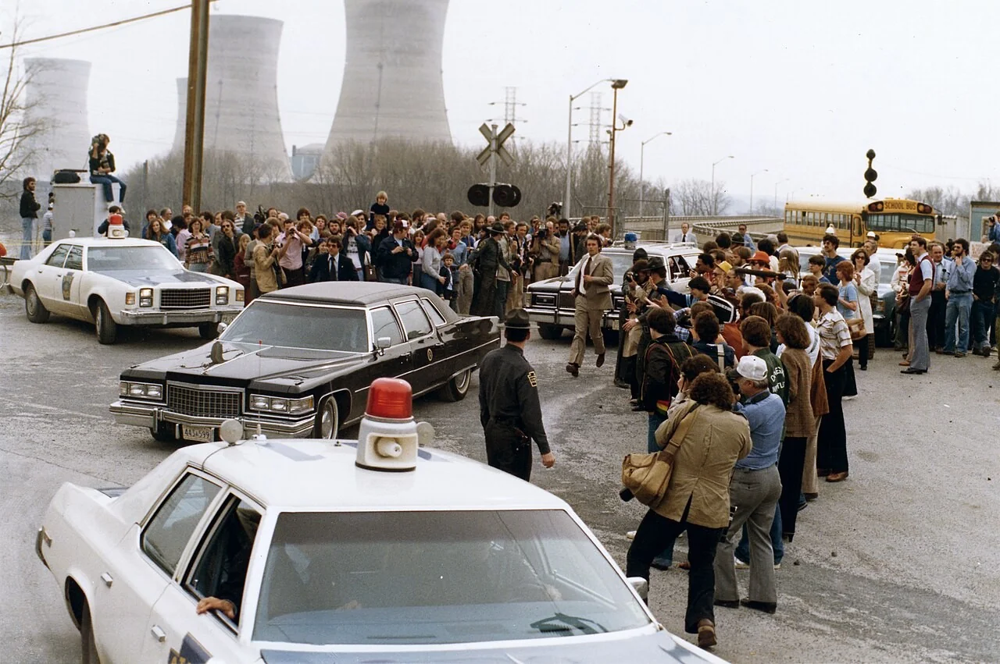

Nuclear History · 230
A Load No Insurer Could Carry Alone — The Birth of the Nuclear Insurance Pools (NELIA, MAELU and ANI)
No single company could insure a nuclear accident, so 246 of them wrote one policy together and pushed nuclear risk out of every ordinary policy.
In the spring of 1956, American insurers formed two nuclear liability pools, NELIA for stock companies and MAERP/MAELU for mutuals, because no single company could carry a nuclear accident on its own. Together they offered exactly $60 million, the figure that became the private first layer of the Price-Anderson Act. Renamed American Nuclear Insurers (ANI) in 1978, the pool paid its first major claims after Three Mile Island in 1979 and today offers up to $500 million.
The clause in the small print
Read an American homeowner's or car insurance policy all the way to the end and, somewhere in the small print, you will find a clause to this effect: loss caused by a nuclear incident is not covered. It is called the nuclear exclusion, and it can feel a little chilling. Are people who live near a nuclear plant simply on their own? [3]
They are not. A separate kind of insurance fills that gap, and it began in the spring of 1956, when hundreds of American insurance companies concluded that this was a load no single firm could carry, and decided to carry it together.
When $10 million was a "major operation"
Once the Atomic Energy Act of 1954 opened nuclear energy to private industry, senior underwriters began receiving serious inquiries about liability limits of $50 million to $100 million for nuclear facilities.
By the standards of the day, that was extraordinary. Writing in the Proceedings of the Casualty Actuarial Society in 1959, the actuary Richard H. Butler recalled that "a five million dollar limit was a big deal, and a ten million dollar limit a major operation", and that the largest liability market at home and abroad for any single risk was probably "twenty million dollars or less". [1]
Nuclear risk also had every feature insurers dislike. There were no accident statistics; a single loss could exceed any one company's capital; and injuries such as leukaemia might only appear years later. An Insurance Study Group of industry leaders, appointed by the Atomic Energy Commission (AEC), toured government installations and reached a single conclusion: in Butler's words, "the only solution was the formation of pools". [1]
246 companies sign up
A pool is a joint underwriting body: many insurers put capacity and risk into one basket. In the spring of 1956 two liability pools adopted their constitutions:
- NELIA (Nuclear Energy Liability Insurance Association), the pool of stock insurance companies;
- MAERP (Mutual Atomic Energy Reinsurance Pool), the pool of mutual companies, which wrote liability business under the name MAELU (Mutual Atomic Energy Liability Underwriters).
A property pool, NEPIA, was formed the same year. NELIA's recruiting was refreshingly simple: it wrote to every stock company listed in Best's Insurance Reports as writing miscellaneous liability, and invited any firm willing to commit at least $25,000 per risk. By about 1959 NELIA had 141 members and MAERP 105. Their capacity was $46.5 million and $13.5 million respectively: exactly $60 million in total. [1] [2]

That "exactly" was deliberate. The pools actually had a little more capacity, Butler explained, but they wanted to match "the round total figure of $60,000,000 which had been referred to many times both in congressional hearings and in discussions with industry", and to keep the rest as a cushion. That figure became the private-insurance first layer of the Price-Anderson Act of 1957. [1]
Learning from pools that failed
American casualty insurers had an "ancient and unhappy history" of optional pools, into which members dumped only the risks they did not want; such pools lost money. So the nuclear pools reversed the rule. For nuclear facilities, members would not write liability cover on their own account at all; the pools became their exclusive agents. [1]
The other half of the design is the exclusion we started with. From 1 March 1958, member companies attached a nuclear exclusion to their regular liability policies, with matching exclusions in their reinsurance treaties. With no danger of paying twice for the same loss, reinsurers could commit to the pools as well; on average about 70% of capacity came from primary insurers and 30% from reinsurers.
The two pools worked almost as one. They used identical policy forms and rates, and each reinsured every risk written by the other, sharing it 77.5% to NELIA and 22.5% to MAELU. Forms and rates took effect on 1 February 1957, and NELIA bound the first risk in March 1957. By 1959, Butler reported, the pools "have had no losses at all". [1]
A new name and a rising limit
In 1974 NELIA and the property pool NEPIA merged to form NEL-PIA, which in 1978 was renamed American Nuclear Insurers (ANI). Its maximum policy limit climbed in steps. [2]

From $60 million in 1957 it rose to $140 million in 1977, $200 million in 1988 and $500 million in 2024: roughly 8.3 times higher in nominal terms. [2]
Spring 1979: an office near the plant
The system's first big test came with the accident at Three Mile Island (TMI) Unit 2 on 28 March 1979. At the time, $140 million of first-layer cover was available. [3]

Pool representatives reached Harrisburg the day after the accident and opened a local claims office on 31 March. Pennsylvania's governor had only advised pregnant women and families with young children near the plant to leave; no evacuation was ordered. Even so, the insurance paid living expenses for families who chose to go. Evacuation claims totalled about $1.2 million to 3,170 claimants, plus over $92,000 in lost wages. The adjusters asked only that unused money be returned, and, according to the NRC, recipients sent back several thousand dollars. [3] [4]
Class actions followed and were settled in 1981. Including legal costs, the pools paid about $71 million in all, entirely from the private first layer. The last of the litigation ended in 2002–2003 (ANI and the NRC give slightly different years). [2] [3] [4]
Pools beyond America
Britain also set up a nuclear pool in 1956, today's Nuclear Risk Insurers, and according to the World Nuclear Association later national pools were modelled on it. Today pools in more than 20 countries reinsure one another, spreading the risk across the globe. [5]
In the end, the nuclear pools are the largest expression of insurance's oldest idea: a load too heavy for one becomes bearable when many carry a little. Behind the chilling line in a household policy stands a rope held by hundreds of insurers.